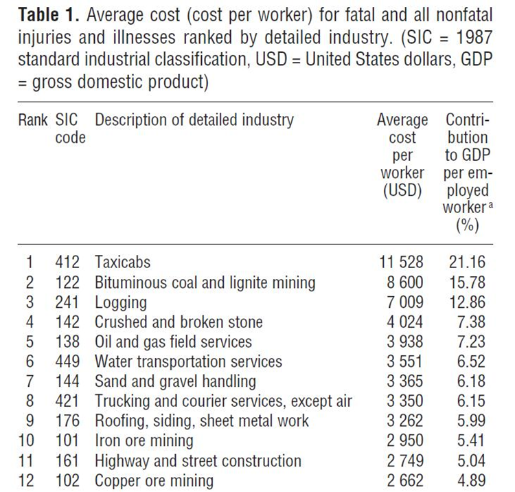
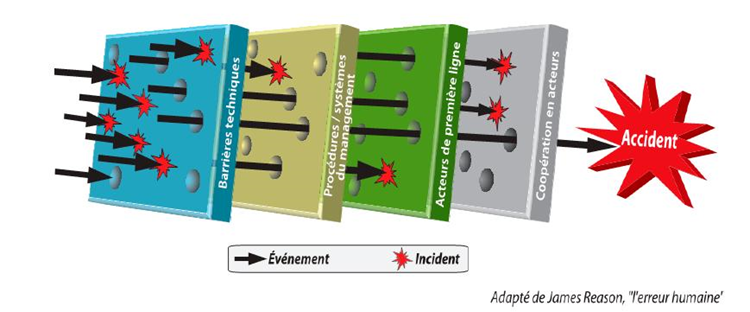
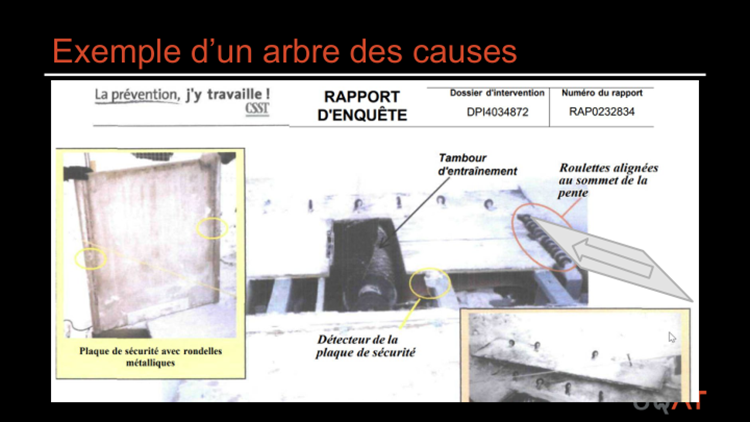
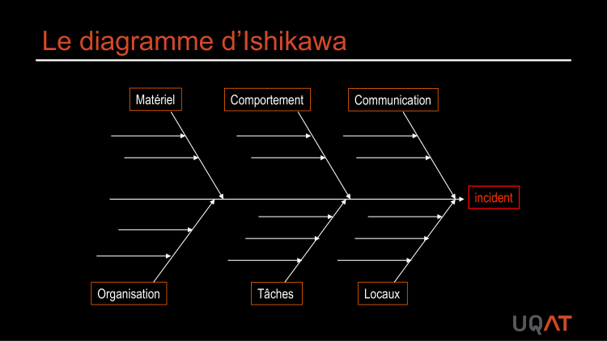
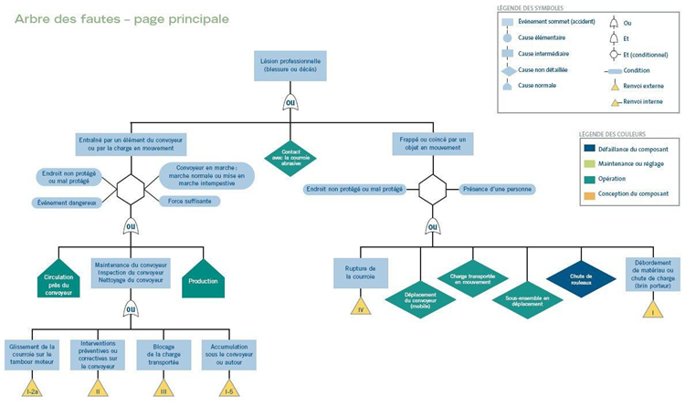
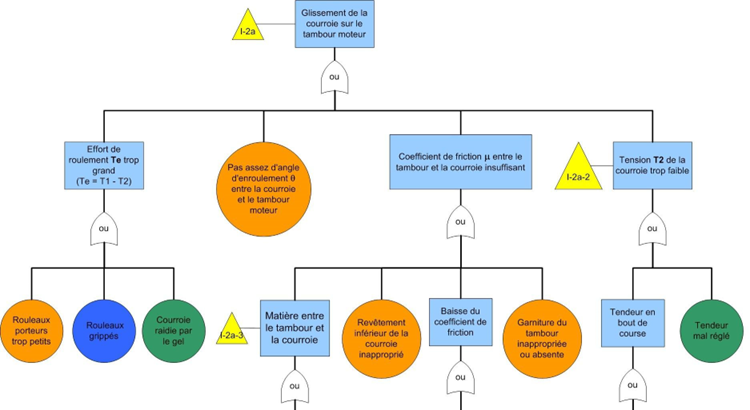
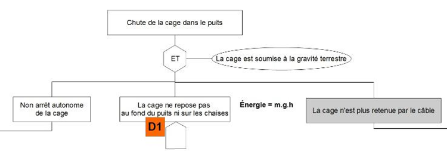

Accidents et incidents, théorie causale
Un accident a toujours plusieurs causes, jamais une seule. Les théories causales (Reason, Dekker, INRS) et les outils d'enquête (arbre des causes, Ishikawa, arbre de défaillance, nœud papillon) permettent de remonter aux causes profondes plutôt que de s'arrêter à l'erreur humaine apparente. En contexte minier, cette posture est essentielle pour transformer les presqu'accidents en levier de prévention.
Table des matières
- Définitions et cadre
- Pourquoi faire de la prévention
- Modèles causaux
- Arbre des causes (INRS)
- Diagramme d'Ishikawa
- Arbre de défaillance et nœud papillon
- Enquête d'accident, méthode
- Application terrain
- Ressources
Définitions et cadre
| Terme | Définition |
|---|---|
| Accident | Événement non désiré qui cause un dommage à la personne, au matériel ou à l'environnement |
| Incident | Événement non désiré sans dommage corporel mais avec potentiel de dommage |
| Signaler un presqu'accident en mine (near miss) | Événement où le dommage a été évité de justesse |
| Danger | Source potentielle de dommage (ISO 12100) |
| Risque | Combinaison de la probabilité d'occurrence et de la gravité (Risque = Probabilité × Conséquence) |
Le risque zéro n'existe pas, il se gère. Les presqu'accidents sont des occasions de prévention gratuites.
Pourquoi faire de la prévention
Quatre familles de motivations
- Légales : LSST, LATMP, Loi sur les ingénieurs, Code criminel canadien C-21/C-45.
- Corporatives : objectif zéro accident, développement durable, image.
- Économiques : un accident coûte cher. En Ontario (2007), coût moyen total environ 85 000 $ par accident avec perte de temps (20 % directs, 80 % indirects). Pour une entreprise à 6 % de marge, il faut près de 1 M$ de ventes nettes pour compenser.
- Sociales : au Québec en 2022, 180 décès et 104 732 lésions pour une population active de 8,5 M. Au Canada, environ 5 morts par jour liés au travail.
L'INRS résume la démarche en neuf principes généraux de prévention : éviter le risque, évaluer, combattre à la source, adapter le travail à l'humain, suivre l'évolution de la technique, substituer ce qui est dangereux, planifier la prévention, privilégier la protection collective sur l'individuelle, et instruire les travailleurs.
Le coût d'un accident reste largement sous-estimé tant qu'on ne décompose pas les frais indirects.

Toucher l'image pour l'agrandirModèles causaux
Trois grandes approches structurent la lecture d'un accident.
| Modèle | Idée centrale |
|---|---|
| Domino (Heinrich, 1931) | Cinq dominos qui tombent en chaîne, dont l'erreur humaine est le maillon central |
| Lignes de défense (Reason, fromage suisse) | Plusieurs barrières percées s'alignent pour laisser passer le danger |
| Dekker | « L'erreur humaine n'est jamais une cause profonde » ; c'est un symptôme du système |
Le modèle de Reason est aujourd'hui la référence : un accident résulte de défaillances combinées au niveau technique, individuel et organisationnel.

Toucher l'image pour l'agrandirLes causes se regroupent au minimum en trois classes (technique, humain, organisationnel) ou cinq (machine, tâche, milieu, individu, interface).
Arbre des causes (INRS)
Méthode a posteriori pour reconstituer un accident survenu. Référence : INRS ED 6163.
Principe central : un accident a toujours plusieurs causes. On reconstitue les faits en remontant du dommage vers les antécédents, en s'arrêtant aux faits (jamais aux opinions).
Code graphique
- Rectangle : fait permanent (état).
- Cercle : fait inhabituel (variation).
- Bord pointillé : incertitude.
- Lecture de haut en bas, départ au dommage. Liens verticaux ou horizontaux, jamais obliques ni croisés.
Code couleur facultatif : rouge (fait final), orange (faits directs), jaune (immédiates), vert (secondaires), bleu (organisationnelles), violet (fondamentales).

Toucher l'image pour l'agrandirExemple d'arbre construit pour un accident de tapis-ski.
Toucher l'image pour l'agrandirDiagramme d'Ishikawa
Outil collectif en arête de poisson, d'origine japonaise (cercles qualité). Sert à classer les causes possibles d'un effet par rubriques (5M ou 6M)
- Matériel (machines, équipements)
- Méthode (tâches, procédures)
- Main-d'œuvre (comportements, formation)
- Milieu (environnement)
- Matière (intrants)
- Management (organisation)
Construction : équipe pluridisciplinaire, remue-méninges, classement consensuel par rubrique, puis priorisation. Complémentaire de l'arbre des causes.

Toucher l'image pour l'agrandirArbre de défaillance et nœud papillon
Arbre de défaillance (Fault Tree) : analyse a priori, déductive, développée par Watson (Bell Labs, 1961) pour les missiles Minuteman. On part d'un événement redouté et on cherche les facteurs nécessaires et suffisants jusqu'aux événements de base, avec portes logiques ET / OU.

Toucher l'image pour l'agrandirUtile pour visualiser la logique et la diffuser. Limites : ne garantit pas l'exhaustivité, demande temps et rigueur.

Toucher l'image pour l'agrandirNœud papillon : combine arbre de défaillance (en amont, causes) et arbre d'événements (en aval, conséquences) autour d'un événement redouté central. Exemple historique : incendie d'usine de peinture en Allemagne (2008), fuite de CO2, 107 intoxications.
Exemple appliqué à la chute d'une cage : chaîne de défaillances combinées.

Toucher l'image pour l'agrandirEnquête d'accident, méthode
Référence principale : norme CSA Z1005-2021 (planifier, exécuter, vérifier, agir).
Quand enquêter : tout accident, mais aussi les passés proches et incidents mineurs. Les presqu'accidents sont les meilleurs candidats.
Qui : équipe pluridisciplinaire incluant les travailleurs (présence du CSS et du représentant à la prévention).
Classement des facteurs
- 3 classes : technique, humain, organisationnel.
- 4 classes (Z1005) : personnel, matériel, environnement, processus.
- 6 classes : individu, tâche, matériel, milieu, organisation, gestion.
Six étapes sur le lieu : sécuriser, observer, photographier, recueillir, interviewer, faire les croquis. Puis au bureau : reconstitution, arbre des causes, rapport, recommandations.
Faits vs opinions vs jugements : seuls les faits doivent figurer dans la chronologie. Les jugements appartiennent à la phase d'interprétation.
Application terrain
Configurations minières typiques où la causalité est complexe
| Contexte | Pourquoi la lecture causale est exigeante |
|---|---|
| Chute de roches en chantier souterrain | Cumul géotechnique, séquence de minage, contrôle des terrains, qualité de l'écaillage, formation du foreur |
| Heurt entre équipement lourd et piéton | Visibilité, ergonomie de la cabine, plan de circulation, communication radio, fatigue de fin de quart |
| Renversement d'équipement | Stabilité du terrain, géométrie de la rampe, vitesse, expérience opérateur, état mécanique |
| Coup d'arc électrique sous-station | Procédure cadenassage, EPI Cal/cm², état de l'appareillage, supervision |
| Inondation ou venue d'eau | Plan de drainage, instrumentation, signalement précoce, plan d'évacuation |
Leviers d'enquête spécifiques au secteur minier
- Intégrer un représentant du sauvetage minier dès l'arrivée sur les lieux.
- Documenter les conditions atmosphériques (gaz, ventilation, température) au moment de l'événement.
- Reconstituer le dernier tour de garde : qui a vu quoi, quand, à quel niveau.
- Croiser avec les indicateurs de fatigue (heures travaillées, position dans la rotation FIFO). Voir Quarts longs et fatigue en souterrain.
- Vérifier la disponibilité et l'état des équipements de sauvetage à proximité.
Souterrain vs surface : en souterrain, la temporalité de l'enquête est contrainte par la stabilité du terrain et la ventilation. Les preuves se dégradent vite. Documenter rapidement avec photos et croquis, sans compromettre la sécurité de l'équipe d'enquête.
Ressources
| Document | Type | Source |
|---|---|---|
| INRS ED 6163 (arbre des causes) | Guide | INRS |
| Norme CSA Z1005-2021 (enquête d'incident) | Norme | CSA |
| Modèle de Reason, lignes de défense | Cadre conceptuel | Reason, 1990 |
| Grille de classement 5M / 6M | Gabarit | À développer en interne |
| Trousse d'enquête sur le lieu (appareil photo, gallon, fiches) | Matériel | Préparer par site |
Articles wiki connexes
Pages qui pointent ici (11)
- 🎯 Démarrage rapide, conseiller SST Sécurité industrielle
- 🎯 Démarrage rapide, direction et RH Sécurité industrielle
- 🎯 Démarrage rapide, superviseur Sécurité industrielle
- 🏠 Wiki [[Sécurité industrielle]], mines Sécurité industrielle
- Analyse des accidents Sécurité industrielle
- Appréciation du risque, méthodes Sécurité industrielle
- Gestion des risques en entreprise Sécurité industrielle
- Hiérarchie des moyens de prévention Hygiène industrielle
- Hiérarchie des moyens de prévention Sécurité industrielle
- Programme d'enquête d'accidents Sécurité industrielle
- Risques mécaniques et opérations Sécurité industrielle